Instalasi Software OtomaX
Install Driver HandPhone atau Modem
Sebelum menginstall Software OtomaX sebaiknya install driver HandPhone atau Modem dahulu.
- Siapkan file driver HandPhone atau Modem yang akan digunakan, kalau menggunakan HP Siemens C55/M55 atau Modem Wavecom dapat mendownloadnya disini.
- Extraxt file PL2303_Prolific_DriverInstaller_v1.12.0.zip, dan kemudian klik 2x pada file bernama PL2303_Prolific_DriverInstaller_v1.12.0.exe.
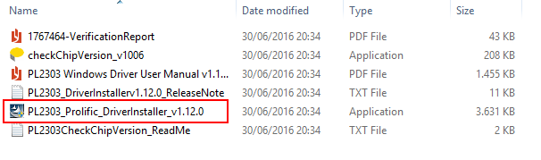 - Klik Yes.
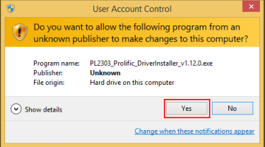 - Klik Next.
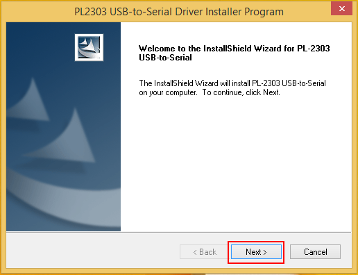 - Klik Finish.
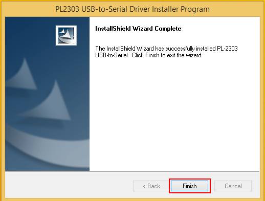
Install Software OtomaX
Tata cara menginstall Software OtomaX ialah sebagai berikut:
- Cari file OtomaX Free Edition yang telah Anda download. Bila belum silahkan download dahulu disini.
- Extraxt file Free_Edition_3.6.6.zip (bila menggunakan versi 3.6.6), dan kemudian copy ke folder OtomaX yang telah dibuat sebelumnya (lihat disini), atau folder lokasi yang Anda inginkan.
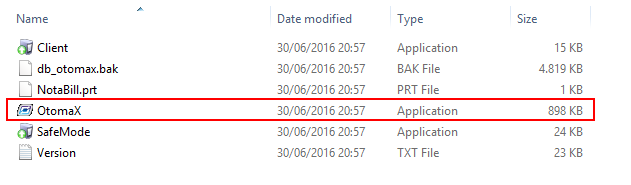 - Agar mudah menjalankannya buat shortcut OtomaX di Desktop.
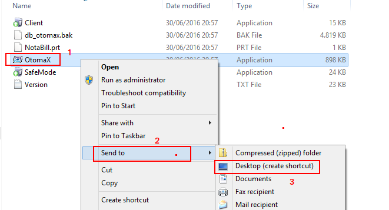
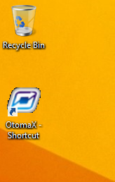
Restore Database
Tata cara restore Database OtomaX ialah sebagai berikut:
- Klik tombol Start cari Microsoft SQL Server 2005 -> SQL Server Management Studio Express, klik kanan dan pilih Run as administrator.
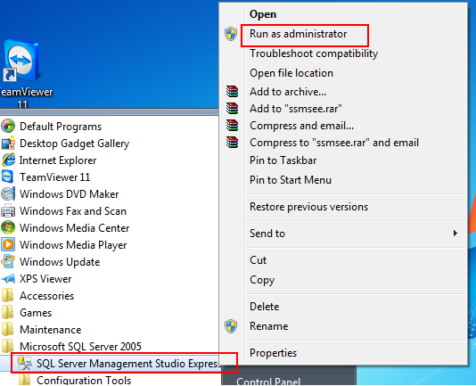 - Klik Yes.
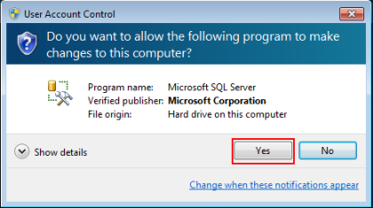 - Klik Connect.
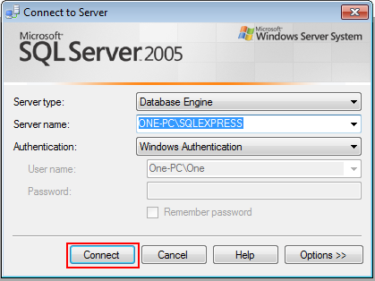 - Pilih Databases, klik kanan kemudian pilih Restore Database....
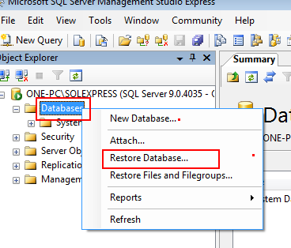 - Pada box To database: isi otomax. Kemudian pilih CheckItem From device dan klik tombol sebelah kanannya.
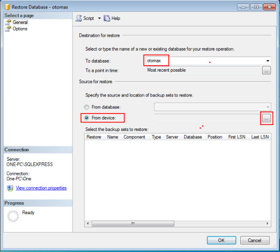 - Klik Add.
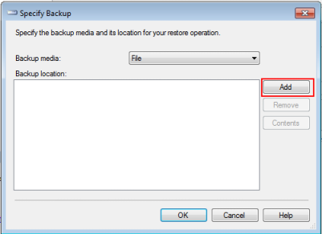 - Cari folder OtomaX tempat instalasi OtomaX, dan kemudian pilih file di dalam folder tersebut yang bernama db_otomax.bak.
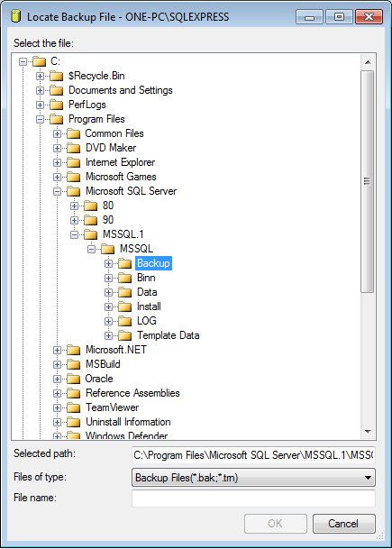
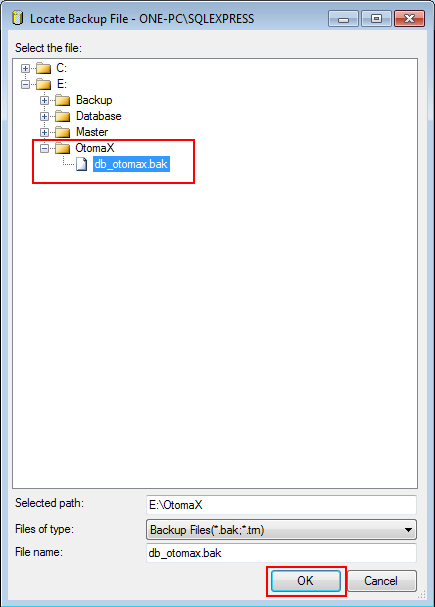 - Klik OK.
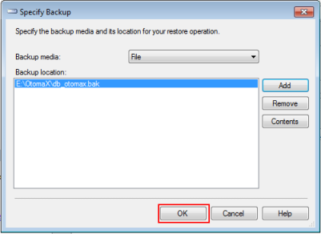 - Centang CheckBox Restore.
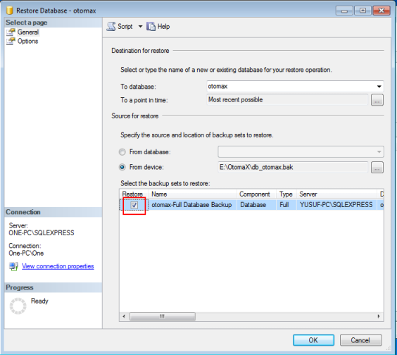 - Klik Options, kemudian klik tombol sebelah kanan otomax.
- Pilih folder Database yang sudah dibuat sebelumnya (lihat disini), kemudian pada box File name isi otomax.mdf dan klik OK.
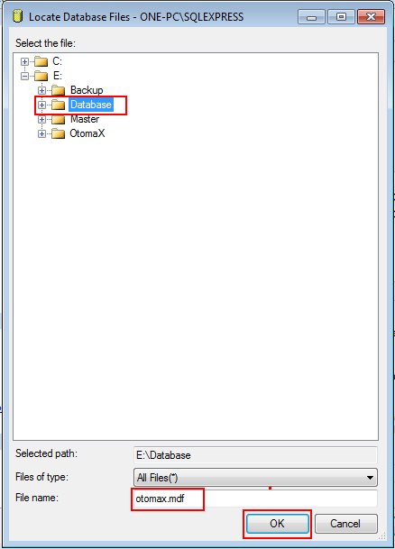 - Klik tombol sebelah kanan otomax_log.
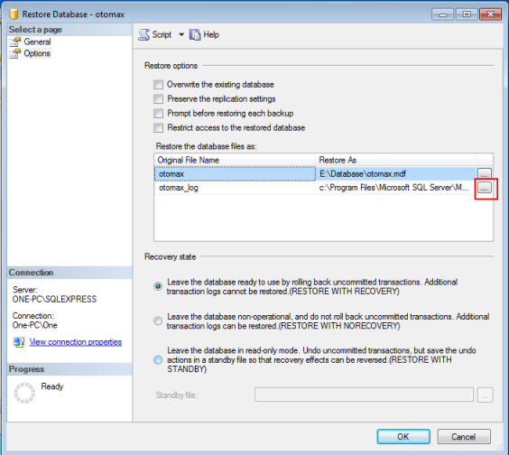 - Pilih folder Database yang sudah dibuat sebelumnya (lihat disini), kemudian pada box File name isi otomax.ldf dan klik OK.
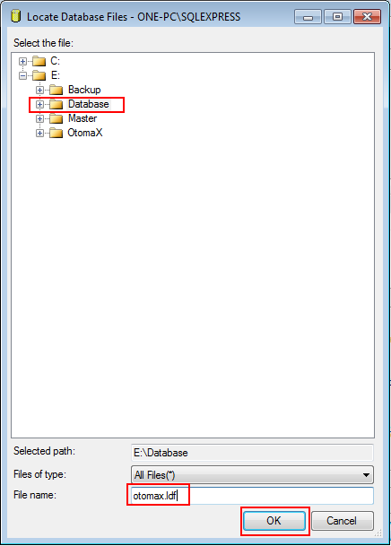 - Pastikan hasilnya seperti gambar di bawah, dan klik OK.
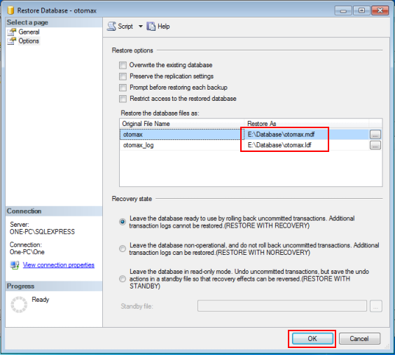 - Restore sukses, kemudian klik OK.
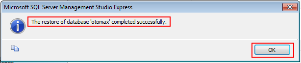 - Database OtomaX akan terbentuk di folder Database, lihat gambar di bawah.
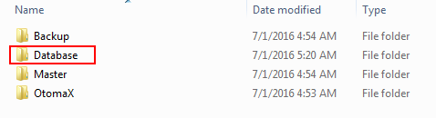
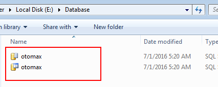
Setting SIM Card dongle
Tata cara Setting SIM Card dongle ialah sebagai berikut:
- Jalankan Software OtomaX dengan klik 2x pada shortcut-nya yang telah dibuat sebelumnya di Desktop.
Jika muncul seperti gambar di bawah, klik OK
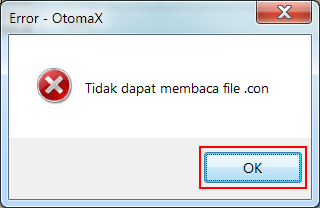
Selanjutnya klik tombol Connect.
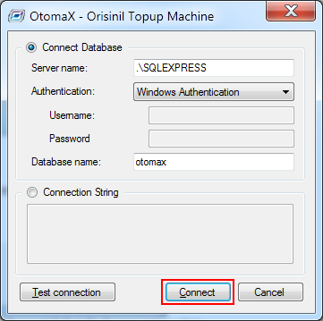
Jika muncul form login masukkan Login ID: admin, Password: admin dan klik Login.
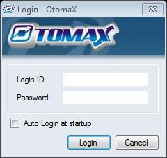 - Masukkan SIM Card calon dongle ke HandPhone, Modem Wavecom atau lainnya (selanjutnya disebut dengan perangkat).
- Tancapkan kabel USB/Serial perangkat Anda ke Komputer, akan muncul proses install driver perangkat.
- (Untuk Windows 7) klik tombol Start, pada box search ketik device manager, kemudian klik Device Manager.
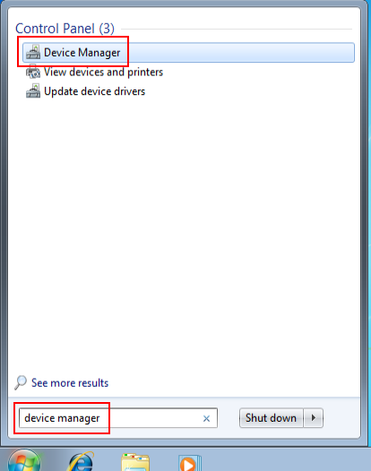 - Perhatikan Port COMXX (dimana XX ialah berupa angka) dari perangkat Anda. Misalnya perangkat Anda di COM26.
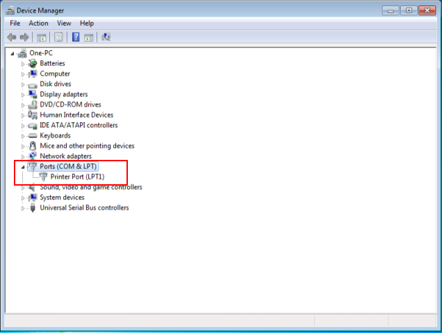
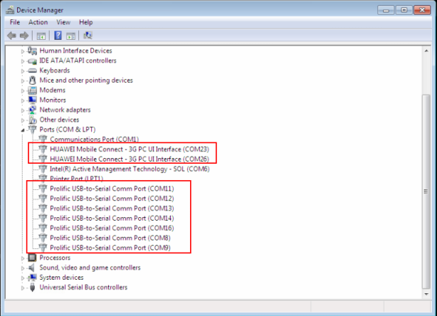 - Masuk ke OtomaX, pada Terminal !#dongle klik kanan dan pilih Setting. Kemudian pada Serial Port pilih COM26 (sesuaikan dengan COM perangkat Anda), dan klik tombol Simpan.
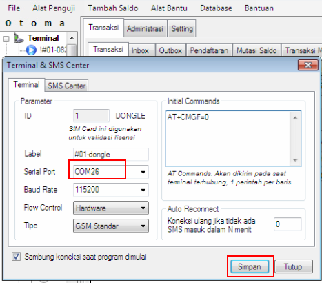 - Icon Terminal akan berwarna biru pertanda OtomaX sudah bekerja.
Instalasi Software OtomaX sudah selesai, siap digunakan. Selanjutnya Anda dapat mencobanya; atau membeli Edisi Berbayar, selengkapnya klik disini dan klik disini.